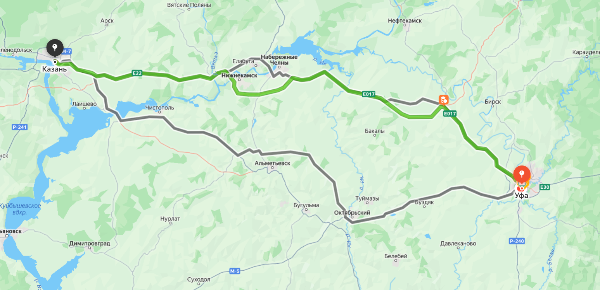

Маршрут и условия
Отправление из Уфы: .
Встреча у центрального входа на Южный автовокзал Уфы. Прибытие в Казань — к автовокзалу «Центральный». Предусмотрена одна остановка для отдыха.

Характеристики поездки
- Водитель
- Алексей
- Автомобиль
- Lada Vesta, серый цвет
- Продолжительность
- Около 7 часов
- Стоимость места
- 1 500 ₽
- Свободные места
- 3
Правила в салоне
- Курение в автомобиле запрещено.
- Крупногабаритный багаж согласовывается заранее.
- Музыка выбирается с учетом пожеланий пассажиров.